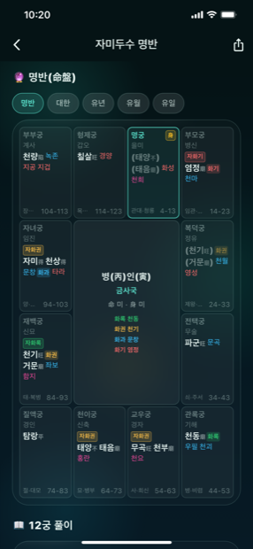
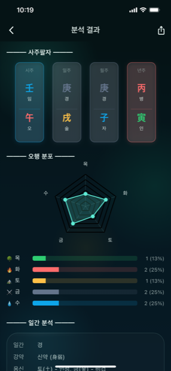
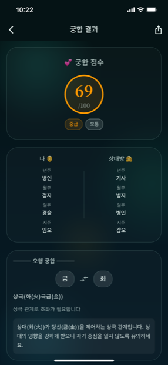
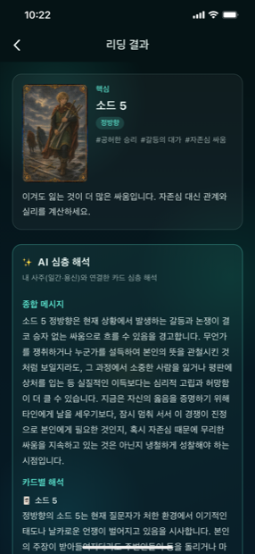

사주프라임
태어난 순간, 하늘이 적어둔 이야기.
생년월일시 하나로 사주팔자·자미두수·궁합·타로를 분석하고, AI 도사님에게 물어보세요.
태어난 순간, 하늘이 적어둔 이야기.
생년월일시 하나로 사주팔자·자미두수·궁합·타로를 분석하고, AI 도사님에게 물어보세요.
사주프라임(SajuPrime)은 동양 명리학의 핵심을 한 손에 담은 AI 운세 앱입니다. 생년월일시를 입력하면 사주팔자를 세우고 오행 분포와 일간(日干)의 강약, 용신(用神)까지 자동으로 계산해, 나라는 사람이 타고난 기운의 균형을 한눈에 보여줍니다. 복잡한 만세력을 몰라도, 태어난 순간에 새겨진 이야기를 쉽고 깊이 있게 읽어드립니다.
사주풀이에 머물지 않습니다. 별자리로 인생 12궁을 읽는 자미두수 명반, 두 사람의 궁합 점수와 오행 상생·상극 해석, 그리고 오늘의 질문에 답을 건네는 타로 카드까지 하나의 앱에 담았습니다. 특히 타로와 운세 해석은 단순한 카드 뜻풀이에 그치지 않고, 내 사주(일간·용신)와 연결한 AI 심층 해석으로 지금 나에게 필요한 메시지를 짚어줍니다.
매일 아침에는 오늘의 운세 점수와 길흉(宜·忌)을 확인하고, 궁금한 것이 있으면 AI 도사님에게 직접 물어볼 수 있습니다. 사주프라임은 한국어·English·日本語·中文 4개 언어를 지원하며, 현재 App Store 심사를 진행 중입니다. 출시되는 대로 이 페이지에서 다운로드 링크를 안내해 드리겠습니다.
사주부터 자미두수·궁합·타로·AI 상담까지, 한 앱에서
년·월·일·시 사주를 세우고 오행 분포, 일간의 신강·신약, 용신·희신을 자동으로 분석해 타고난 기운의 균형을 보여줍니다.
명궁·재백·관록 등 12궁에 배치된 주성·보좌성과 사화(化祿·化權·化科·化忌)를 명반으로 확인하고, 대한·유년·유월·유일 흐름까지 살펴봅니다.
두 사람의 사주를 나란히 비교해 100점 만점 궁합 점수와 오행 상생·상극 관계, 관계에서 유의할 점을 풀어드립니다.
정·역방향 카드를 뽑고, 내 사주(일간·용신)와 연결한 AI 심층 해석으로 종합 메시지와 카드별 풀이를 받아봅니다.
“올해 이직해도 될까요?” 같은 고민을 물어보면, 사주와 자미두수·세운을 근거로 도사님이 맞춤 조언을 건넵니다.
매일 갱신되는 오늘의 운세 점수와 길흉(宜·忌), 오늘 하면 좋은 일과 삼가야 할 일을 홈에서 바로 확인합니다.
분석 결과를 이미지·PDF로 저장하고 공유할 수 있으며, 지난 분석은 기록에서 다시 열어볼 수 있습니다.
한국어·English·日本語·中文을 지원하며, 앱 안에서 언어를 바로 전환할 수 있습니다.
심해 오로라 톤의 신비로운 UI

홈

사주 분석
자미두수

궁합
생년월일시만 입력하면 사주팔자가 세워지고, 목·화·토·금·수 오행 분포가 레이더 차트로 한눈에 보입니다. 일간의 강약과 용신·희신을 함께 제시해, 무엇이 넘치고 무엇이 부족한지 이해할 수 있습니다.
명궁을 중심으로 형제·부부·재백·관록·복덕 등 12궁에 배치된 별과 사화를 명반으로 보여줍니다. 명반뿐 아니라 대한(10년)·유년·유월·유일까지 전환해 시기별 흐름을 살필 수 있습니다.
카드를 뽑으면 핵심 카드의 정·역방향과 키워드를 보여주고, 여기에 내 사주(일간·용신)를 결합한 AI 심층 해석을 더합니다. 종합 메시지와 카드별 풀이로 지금 필요한 조언을 전합니다.

이직·연애·재물·건강 등 삶의 고민을 자연스러운 문장으로 물어보세요. 도사님이 내 사주와 자미두수, 올해의 세운을 근거로 상황을 짚고, 시기와 방향에 대한 맞춤 조언을 들려줍니다.
사주프라임에 대해 궁금한 점을 확인하세요
생년월일시를 입력하면 사주팔자와 오행 분포, 일간의 강약과 용신을 분석합니다. 여기에 자미두수 명반, 두 사람의 궁합, 타로 리딩, 오늘의 운세·길흉, AI 도사님 상담까지 하나의 앱에서 이용할 수 있습니다.
사주프라임의 타로는 카드 뜻풀이에 그치지 않고, 내 사주의 일간·용신 정보와 결합한 AI 심층 해석을 제공합니다. 그래서 같은 카드라도 나의 기운 상태에 맞춘 종합 메시지와 카드별 해석을 받아볼 수 있습니다.
한국어·English·日本語·中文 4개 언어를 지원하며, 앱 안에서 바로 언어를 전환할 수 있습니다.
사주프라임은 자기이해와 재미를 위한 참고용 앱입니다. 제공되는 운세와 조언은 참고용이며, 의료·법률·재무 등 전문적 판단이나 중요한 결정을 대신하지 않습니다.
현재 사주프라임 앱은 스토어 심사를 진행 중입니다. 출시되는 대로 이 페이지에 App Store·Google Play 다운로드 링크를 안내해 드리겠습니다.